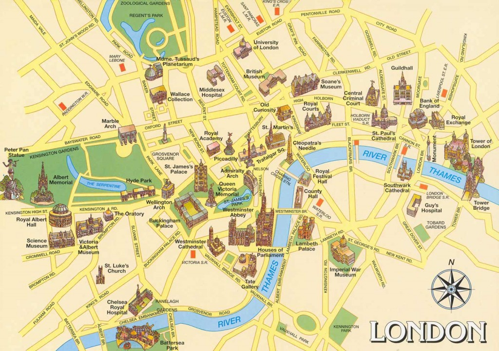
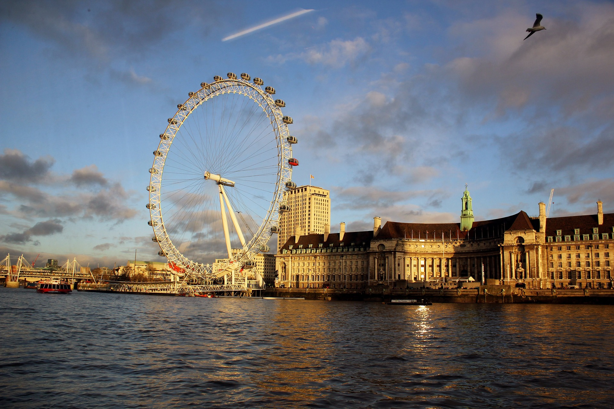
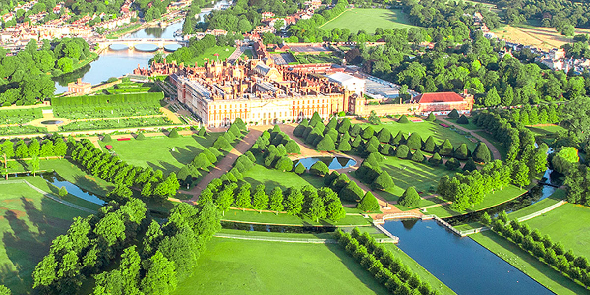
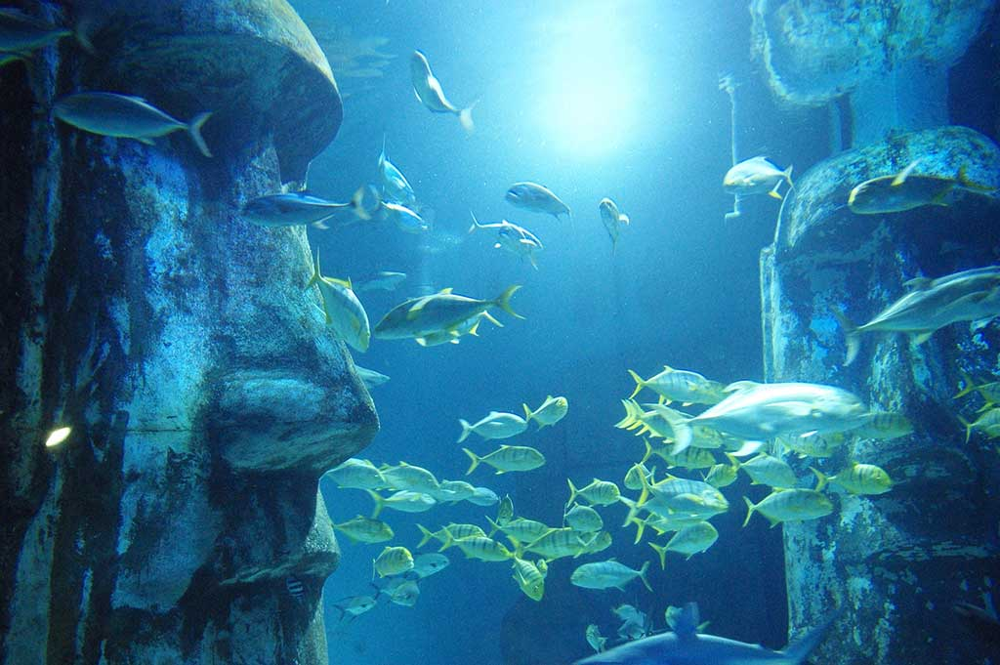

<!DOCTYPE html>
<html>
	<head>
		<title>Atractii turistice</title>
		<link rel="icon" type="x-icon" href="favicon.ico">
		<style>
			ul {    list-style-type: none;
 				margin: 0;
  				padding: 0;
 				overflow: hidden;
 				background-color: #C6C6D9;
			}
			li {float: left;}
			li a {  display: block;
 				color: black;
 				text-align: center;
				padding: 14px 16px;
 				text-decoration: none;
			}
			li a:hover {background-color: #C170CD;}
		</style>
	</head>
	<body bgcolor=#C6C6D9>

		<ul>
  			<li><a class="active" href="Atractii turistice in Londra.html" id="Londra"><font size="5">&nbsp;&nbsp;&nbsp;&nbsp;&nbsp;&nbsp; ACASA &nbsp;&nbsp;&nbsp;&nbsp;&nbsp;&nbsp;</a></li></font>
  			<li><a href="Atractii turistice.html"><font size="5"> ATRACTII TURISTICE </a></li></font>
			<li><a href="Atractii non-turistice.html"><font size="5"> ATRACTII NON-TURISTICE </a></li></font>
			<li><a href="Istorie.html"><font size="5"> ISTORIE </a><li></font>
  			<li><a href="Alte informatii.html"><font size="5"> ALTE INFORMATII </a></li></font>
		</ul>

		<hr>
		<font face="Arial" size="4">
		<marquee>Obiective turistice in Londra! Locuri minunate si deosebite in care trebuie neaparat sa ajungi macar o data in viata! Viziteaza cele mai frumoase locuri din lume! Obiective turistice in Londra. Locuri minunate si deosebite in care trebuie neaparat sa ajungi! Viziteaza cele mai frumoase locuri din lume! Obiective turistice in Londra! Locuri minunate si deosebite in care trebuie neaparat sa ajungi! Viziteaza cele mai frumoase locuri din lume! Obiective turistice in Londra! Locuri minunate si deosebite in care trebuie neaparat sa ajungi! Viziteaza cele mai frumoase locuri din lume! Obiective turistice in Londra! Locuri minunate si deosebite in care trebuie neaparat sa ajungi! Viziteaza cele mai frumoase locuri din lume! Obiective turistice in Londra! Locuri minunate si deosebite in care trebuie neaparat sa ajungi macar o data in viata! Viziteaza cele mai frumoase locuri din lume! Obiective turistice in Londra. Locuri minunate si deosebite in care trebuie neaparat sa ajungi! Viziteaza cele mai frumoase locuri din lume! Obiective turistice in Londra! Locuri minunate si deosebite in care trebuie neaparat sa ajungi! Viziteaza cele mai frumoase locuri din lume! Obiective turistice in Londra! Locuri minunate si deosebite in care trebuie neaparat sa ajungi! Viziteaza cele mai frumoase locuri din lume! Obiective turistice in Londra! Locuri minunate si deosebite in care trebuie neaparat sa ajungi! Viziteaza cele mai frumoase locuri din lume! Obiective turistice in Londra! Locuri minunate si deosebite in care trebuie neaparat sa ajungi macar o data in viata! Viziteaza cele mai frumoase locuri din lume! Obiective turistice in Londra. Locuri minunate si deosebite in care trebuie neaparat sa ajungi! Viziteaza cele mai frumoase locuri din lume! Obiective turistice in Londra! Locuri minunate si deosebite in care trebuie neaparat sa ajungi! Viziteaza cele mai frumoase locuri din lume! Obiective turistice in Londra! Locuri minunate si deosebite in care trebuie neaparat sa ajungi! Viziteaza cele mai frumoase locuri din lume! Obiective turistice in Londra! Locuri minunate si deosebite in care trebuie neaparat sa ajungi! Viziteaza cele mai frumoase locuri din lume!</marquee></font>
		<hr>
		<br>

		<blockquote><blockquote>

		<p><font size="6" face="Arial">ATRACTII TURISTICE</font></p>
		<p><center>
		</center>
		<p><font size="4" face="Arial">&nbsp;&nbsp;Londra este una dintre capitalele istorice ce abunda in obiective turistice si locuri de vizitat si merita vizitata in orice perioada a anului deoarece este un oras plin de istorie si de atractii turistice. Cea mai electrizanta capitala din Europa aduna anual peste 75 milioane de vizitatori. Datorita atractiei fascinante dintre generatii, a culturii (marea majoritate a muzeelor sunt aici gratuite), a capacitatii specific britanice de a inventa mereu ceva nou.</font></p>
		<p><font size="4" face="Arial">&nbsp;&nbsp;Londra este gandita atat de bine din punct de vedere turistic, incat vizitatorii, de la cei mici, pana la adulti, nu se vor plange decat de lipsa de timp. Pentru un city-break sau o vizita mai lunga, Londra este un oras pe care, dupa ce-l vei vizita, vei privi  lumea cu totul si cu totul altfel. Intalnirea dintre civilizatii este atat de armonioasa si naturala, incat Londra te va cuceri, fara indoiala! Orice colt din orasul acesta este deosebit!</font></p>
		<br>
		<p><font size="5" face="Arial">&nbsp;&nbsp;&nbsp;Călătorind cu autobuzul</font></p>
		<table border="1" width="93%" style="border-width: 0px">
			<tr>
				<td style="border-style: none; border-width: medium">
		</td>
				<td style="border-style: none; border-width: medium">&nbsp;<p>
				<font size="4" face="Arial">&nbsp;&nbsp; Londra detine una dintre cele mai mari retele de autobuze din lume, ce functioneaza 24 de ore pe zi. Transport for London este autoritatea responsabilă pentru controlul efectiv al transportului. Reţeaua de transport este una dintre cele mai întinse din lume. Având în vedere câ sunt peste un miliard de câlâtorii cu metroul în fiecare an, este şi foarte aglomerat. Transportul se poate face cu avionul, autobuzul, tramvaiul, bicicleta, metroul, trenul sau gondola, dar şi cu taxi sau maşina personală.</font></p>
		<p><font size="4" face="Arial">&nbsp;&nbsp;Când explorați orașul pentru prima dată, puteți merge într-un tur panoramic de o zi cu autobuzul care vă va duce la Catedrala Sf. Paul, Turnul Londrei unde puteți explora interiorul castelului și un tur panoramic cu barca pe Tamisa. Dar Londra vă oferă mult mai multe oportunități de a vă urca într-un autobuz de vizitare a obiectivelor turistice. Noaptea, orașul strălucește într-o cu totul altă lumină și îl puteți vedea dintr-un autobuz cu cap deschis. Sau poți să râzi bine participând la turneul cu autobuzul fantomă de groază de comedie. Doar în acest oraș autobuzul provoacă o furtună de emoții în rândul turiștilor. La urma urmei, autobuzul roșu este deja un simbol al Marii Britanii.</font></p>
				</td>
			</tr>
		</table>
		<p>&nbsp;

		<p><font size="5" face="Arial">&nbsp;&nbsp;&nbsp;Lista obiective turistice Londra</font></p>
		<p><font size="4" face="Arial">&nbsp;&nbsp;Londra are o reputatie bine-meritata ca fiind unul dintre cele mai scumpe orase din lume. Cu toate acestea este una dintre cele mai populare destinatii turistice. Acest lucru se datoreaza probabil faptului ca orasul de pe Tamisa are cate ceva de oferit pentru orice turist, indiferent de bugetul sau. Orasul este un magnet pentru milioanele de turisti care il viziteaza, si au toate motivele sa o faca. De la obiective turistice moderne cum ar fi Lodon Eye, celebra roata din Londra, pana la atractii foarte vechi cum ar fi Turnul Londrei, capitala Regatului Unit are o oferta de atractii care poate tine ocupat cei mai pretentiosi turisti.</font></p>
		<p><font size="4" face="Arial">&nbsp;&nbsp;Va lasam sa alegeti ce locuri de vizitat in Londra merita si ce locuri de vizitat nu merita atentia dumneavoastra in capitala Regatului Unit din lista de atractii de mai jos.</font></p>
		<br>
		<p><font size="5" face="Arial"><b>&nbsp;&nbsp;&nbsp;Roata din Londra </b>(în engleză London Eye)</font></p>
		<p align="center">
		&nbsp;&nbsp;&nbsp;&nbsp;
		</p>
		<p><font size="4" face="Arial">&nbsp;&nbsp;O atractie oarecum recenta dar extrem de populara, London Eye (Ochiul Londrei) este o roata gigantica situata pe malul sudic al Tamisei, cea mai mare roata de observare a Europei. Aceasta roata este emblematica pentru Londra, in ea intrand in medie 3,5 milioane de persoane anual.
		<p>&nbsp;&nbsp;Structura cu o inaltime de 135 de metri a fost proiectata de echipa de arhitecti formata din David Marks si Julia Barfield, sot si sotie. Constructia giganticei roti din Londra a durat mai mult de un an si jumatate. In capsulele cu un aer futurist pot incapea pana la 25 de persoane, aceste capsule fiind aduse cu trenul prin tunelul de sub Canalul Manecii tocmai din Franta si fiind in numar de 32 - exact cate districte se afla in Londra. Fiecare capsula are o lungime de 8 metri si cantaresete 500 de kilograme, totodata fiind dotate cu aer conditionat. 
		<p>&nbsp;&nbsp;Roata din Londra se invarte foarte incet, permitand turistilor sa se imbarce fara a fi oprita complet. O tura completa dureaza aproximativ 30 de minute, de multe ori mai putin decat timpul petrecut la ghiseu pentru a obtine bilet. Datorita design-ului deosebit al capsulelor individuale din sticla, acestea ofera cele mai spectaculoase vederi ale orasului, vizitatorii avand parte de o priveliste de 360 de grade a intregii capitale britanice. In zilele senine se poate vedea pana la 40 de kilometri distanta.
		
		<p>&nbsp;<p><b><font size="5">&nbsp;&nbsp;&nbsp;&nbsp;Turnul Londrei</b> (în engleză Tower of London)</font>
		<p><center>&nbsp;&nbsp;</center>
		<p>&nbsp;&nbsp;Turnul Londrei (care consta, de fapt, intr-o fortareata cu 19 turnuri, construite de-a lungul secolelor) si-a primit denumirea de la cel mai inalt turn al sau, de 30 m, numit White Tower, construit in 1097 din piatra si vopsit apoi in alb in 1241. Sutele de ani de constructie au dus la aparitia unei fortarete de forma hexagonala cu un zid exterior foarte gros si inalt, ce incorporeaza sase turnuri si un spatiu de patrula numit Outer Ward. in spatele acestui spatiu se afla un zid de intarire interior, fortificat din loc in loc cu turnuri cilindrice. Dorit de William Cuceritorul ca fort militar, a fost remaniat si amplificat de urmatorii suverani pana in secolul XVII.
		<p>&nbsp;&nbsp;In decursul secolelor, magnificul Turn din Londra a indeplinit multiple roluri: de la inchisoare la palat, camera a comorilor si gradina zoologica privata. Stand de paza pe malul Tamisei, Turnul Londrei este un obiectiv turistic impresionant. Una dintre structurile cele mai reprezentative din Marea Britanie, acest sit inclus in Patrimoniului Mondial fascineaza timp de cateva ore vizitatorii curiosi sa afle istoria bogata a tarii - la urma urmei, atat de multe s-au intamplat aici. Turnul gazduieste bijuteriile Coroanei, cu inele si coroane batute cu pietre scumpe, pazite de un corp de politie specializat, asa numitii Beefeater, care in ocazii speciale imbraca specifica uniforma rosie. Exista aici si inchisoarea, capela St. John, o bijuterie de arhitectura religioasa de la 1078, si White Tower, cea mai veche parte a complexului.
		<p><b>&nbsp;&nbsp;Turstii sunt invitati sa descopere secretele ascunse ce salasluiesc intre zidurile Turnului, sa se minuneze de splendoarea bijuteriilor coroanei, sa priveasca locul in care trei regine au fost decapitate si sa exploreze miturile si legendele care fac din vizita la Tower of London un moment important al vacantei la Londra.</b>

		<p>&nbsp;<p><b><font size="5">&nbsp;&nbsp;&nbsp;&nbsp;Tower Bridge</b></font>
		<table border="1" width="101%" style="border-width: 0px">
			<tr>
				<td style="border-style: none; border-width: medium"><font size="4" face="Arial"></font></td>
				<td style="border-style: none; border-width: medium">
				<font size="4">&nbsp;&nbsp; Tower Bridge este un pod peste 
				Tamisa, construit intre anii 1888 - 1894, proiectat in stilul 
				neogotic de Horace Jones si leaga partea de sud cu nordul 
				orasului. Situat in apropiere de London Tower, Tower Bridge, cu 
				cele doua turnuri uriase de 61 de metri deasupra nivelului 
				raului Tamisa, este unul dintre cele mai cunoscute repere din 
				Londra.&nbsp; Lungimea totala a podului este de 244 m si 
				gazduieste in interior o expozitie - p</font><font size="4" face="Arial">asaje 
				pietonale au fost facute pentru a permite oamenilor sa 
				traverseze Tamisa in timp ce podul poate fi ridicat pentru a 
				permite vapoarelor mari sa treaca, iar astazi, pasajele 
				pietonale servesc drept galerii de unde poate fi admirata 
				panorama peste Tamisa. De pe pasarela ce leaga cele doua turnuri 
				privelistea este exceptionala.</font><font size="4"> Dupa aceste 
				privelisti vizitatorii pot vedea camera motoarelor cu aburi care 
				in era Victoriana puneau in miscare podul.</font><p>
				<font size="4">&nbsp;&nbsp; Culoarea actuala a podului dateaza 
				din 1977 cand a fost vopsit in rosu, alb si albastru in onoarea 
				Reginei Elisabeta a II-a, cu prilejul celei de-a 25-a aniversari 
				a urcarii pe tron. Culoarea originala a fost maro ciocolatiu.</font></td>
			</tr>
		</table>
		<p>&nbsp;&nbsp; Frecvent, turistii confunda Tower Bridge cu Podul 
		Londrei (London Bridge), care este podul urmator pe directia sensului de 
		curgere a Tamisei. O legenda urbana spune ca in anul 1968, Robert 
		McCulloch, cel care a cumparat London Bridge si l-a reconstruit in Lake 
		Havasu, a crezut ca a cumparat Tower Bridge. Acest zvon a fost infirmat 
		de McCulloch si de Ivan Luckin, cel care a vandut podul.</p>
		<p>&nbsp;<p><b><font size="5">&nbsp;&nbsp;&nbsp;&nbsp;Catedrala Sf. Paul</font></b><table border="1" width="95%" style="border-width: 0px">
			<tr>
				<td style="border-style: none; border-width: medium"><font size="4" face="Arial"></font></td>
				<td style="border-style: none; border-width: medium"><font size="4" face="Arial">&nbsp; Cea mai mare si cea mai faimoasa dintre multele biserici din Londra si, fara indoiala, una dintre cele mai spectaculoase catedrale din lume, Catedrala Sf. Paul se afla pe locul unui templu roman, aceasta fiind capodopera lui Sir Christopher Wren. Construita din piatra de Portlan si incununata de un dom minunat, St Paul's Cathedral este un obiectiv turistic faimos in plenitudinea de obiective turistice din Londra. Treptele foarte late conduc spre superba fatada de vest cu doua etaje si doua turnuri in stil baroc, iar in turnul din stanga se gaseste cel mai mare clopot din Anglia.
		<p>&nbsp;&nbsp;Primul Sf. Paul a fost sfințit în anul 604 d.Hr. Cu toate acestea, versiunile timpurii ale catedralei au fost supuse incendiilor și atacurilor vikingilor, deoarece Anglia s-a schimbat între păgânism și creștinism.
				</font>
				<p>&nbsp;</td>
			</tr>
		</table>
		<p><center>Vechea Catedrală Sf. Paul din Londra din arhitectura creștină timpurie de Francis Bond (1913)</center>
		<p><center></center>
		<p>&nbsp;&nbsp;Aceasta Catedrala este un monument celebru in Londra vizitat de milioane de turisti in fiecare an. St. Paul's Cathedral contine multe artefacte interesante si unele monumente ale unor britanici de seama. In altarul din partea nordica se gaseste Capela Sufletelor, dedicata memoriei lui Lord Kitchener si a oamenilor sai morti in razboi. Acest altar contine si un memorial inchinat ducelui de Wellington, eroul bataliei de la Waterloo. Tot la Catedrala Sf. Paul se afla si monumentul lui Nelson, eroul marilor care a pierit in batalia de la Trafalgar din anul 1805. Cripta care se crede ca este cea mai mare din Europa, contine aproximativ 200 de morminte.

		<p>&nbsp;<p><b><font size="5">&nbsp;&nbsp;&nbsp;&nbsp;Palatul Westminster. Palatul parlamentului. Parlamentul britanic</font></b><font size="5"><b>.</b></font><table border="1" width="102%" style="border-width: 0px">
			<tr>
				<td style="border-style: none; border-width: medium"><font size="4" face="Arial"></font></td>
				<td style="border-style: none; border-width: medium"><font size="4" face="Arial">&nbsp;<p>&nbsp; 
				Parlamentul este o cladire impunatoare de pe malul Tamisei si un 
				obiectiv turistic important in Londra cunoscut si sub numele de 
				Palatul Westminster, acesta fiind unul dintre multele monumente 
				din oras pe care UNESCO le-a declarat Patrimoniu Mondial. 
				Cladirea este situata pe locul in care Edward Confesorul a 
				poruncit construirea palatului original in prima jumatate a 
				secolului al XI-lea, intre 1840 si 1888. Capodopera 
				arhitectonica in stil gotic renascestist pe care o puteti vedea 
				astazi a fost construita de catre Charles Barry care a proiectat 
				cladirea astfel incat sa se potriveasca cu Westmister Abbey care 
				se afla in apropiere. </p>
		<p>&nbsp;&nbsp;Palatul original de secol XI a fost distrus de un incendiu in 
		secolul XIX si a fost reconstruit in stil gotic renascentist. In 
		interior gazduieste Westminster Hall, singura aripa inca in picioare din 
		palatul original (salonul e lung de 72,5 metri si larg de 20,5), House 
		of Commons reconstruita dupa bombardamentele din cel de al Doilea Razboi 
		Mondial, House of Lords cu tronul reginei. Nimic nu defineste mai bine 
		Londra decat faimosul turn de locuinte de 97 de metri care gazduieste 
		turnurile impunatoare, bine-cunoscute obiective turistice in Londra 
		precum turnul ceasului Big Ben si turnul Victoria in varful caruia 
		steagul este arborat atunci cand Parlamentul se afla in sesiune.

				</font>
				<p>&nbsp;</td>
			</tr>
		</table>

		<p>&nbsp;&nbsp; Tururile cladirilor Parlamentului ofera o sansa unica de 
		a vedea dezbaterile parlamentare si discutiile politice aprinse in timp 
		real. De la Parliament Square, Whitehall este captusit de atat de multe 
		cladiri guvernamentale incat numele sau a devenit sinonim cu guvernul 
		britanic.
			<p>&nbsp;<p><font size="5"><b>&nbsp;&nbsp;&nbsp;&nbsp;Big Ben</b></font>
		<table border="1" width="90%" style="border-width: 0px">
			<tr>
				<td style="border-style: none; border-width: medium"><font size="4" face="Arial"></font></td>
				<td style="border-style: none; border-width: medium" width="876"><font size="4" face="Arial">&nbsp; 
				Clock Tower, cea mai cunoscuta clopotnita din lume gazduieste 
				clopotul de 13,5 tone - Big Ben. Big Ben este numele clopotului 
				care este în interior turnului. Bataile Big Ben-ului sunt 
				cunoscute in intreaga lume ca fiind semnalul de timp transmis de 
				radioul BBC.
		<p>&nbsp;&nbsp;Turnul are 96 m inaltime. Din cauza schimbarii starii solului de la 
		constructie (in primul rand prin constructia liniei de metrou Jubilee), 
		turnul este usor inclinat spre nord-vest, cu aproximativ 220 milimetri 
		la fata ceasului, aproximativ 1/250.
		<p>&nbsp;&nbsp;Big Ben este unul dintre cele mai importante obiective turistice in 
		Londra, devenind aproape o emblema a capitalei britanice. Big Ben arata 
		de-a dreptul incantator noaptea cand fatada si ceasurile de pe fiecare 
		fata sunt iluminate. Atunci cand Parlamentul se afla in sesiune o lumina 
		straluceste peste fatada ceasului. Acesta este cel mai faimos ceas din 
		lume ce a aparut si in celebrul film Mary Popins, dar si in alte filme 
		foarte cunoscute de la Hollywood. Exista 11 camere in interiorul 
		turnului unde membrii ai Parlamentului pot fi inchisi pentru incalcari 
		ale reglemetarilor constitutionale. Acest lucru este foarte rar, ultimul 
		incident de acest fel fiind inregistrat in anul 1880. Desi este una 
		dintre cele mai importante atractii turistice din lume, interiorul 
		turnului nu este deschis vizitatorilor straini, doar cetatenii Regatului 
		Unit putand sa aranjeze vizite (cu multe zile in avans) prin intermediul 
		parlamentarului lor, insa pe exterior este oricum mult mai impresionant. 
		Turnul nu are lift, astfel ca vizitatorii trebuie sa urce toate cele 334 
		de trepte pana la varf. 

				</font>
				<p>&nbsp;</td>
			</tr>
		</table>
		<p>&nbsp;<p><b><font size="5">&nbsp;&nbsp;&nbsp;&nbsp;Westminster Abbey</b></font>
		<table border="1" width="103%" style="border-width: 0px">
			<tr>
				<td style="border-style: none; border-width: medium"><font size="4" face="Arial"></font></td>
				<td style="border-style: none; border-width: medium"><font size="4" face="Arial">&nbsp;<p>&nbsp; 
				Biserica Sf. Petru din Westminster, mai bine cunoscuta sub 
				numele de Westminster Abbey, ocupa un loc unic in istoria Marii 
				Britanii. O locatie cu o lunga istorie legata de regalitatea 
				britanica, Westminster Abbey se afla pe un loc care a fost 
				asociat cu crestinismul de la inceputul secolului al VII-lea. In 
				prima parte a secolului al XVIII-lea, Nicholas Hawksmoor a 
				proiectat turnurile in stil gotic din partea vestica. Deasupra 
				usii din partea de vest au fost adaugate statui ce reprezinta 
				martiri ai secolului al XX-lea. Acesta a devenit faimos ca 
				locatia preferata pentru oficierea nuntilor regale. </p>
 		<p>&nbsp;&nbsp;Biserica are un interior cu trei nave care culmineaza in Sanctuary, 
		prezbiteriul unde au loc incoronarile, in biserica se pastreaza multe 
		morminte regale, de la cele ale tinerilor principi la Henric VII, pana 
		la Feretory cu relicve de sfinti. De pe partea dreapta a claustrului se 
		ajunge in Chapter House, o sala cu fresce de secol XII si bolti 
		sugestive. Cimitirul de aici este impartit, existand o parte pentru 
		familia regala si alte parti pentru celebritati, poeti sau artisti. 

					<p>&nbsp;</font></td>
			</tr>
		</table>

		<p><b><font size="5">&nbsp;&nbsp;&nbsp;&nbsp;Palatul Buckingham si schimbarea Garzii Regale</font></b><table border="1" width="103%" style="border-width: 0px">
			<tr>
				<td style="border-style: none; border-width: medium"><font size="4" face="Arial"></font></td>
				<td style="border-style: none; border-width: medium"><font size="4" face="Arial">&nbsp; 
				Palatul Buckingham este resedinta Casei Regale a Marii Britanii 
				si un important obiectiv turistic din Londra. Familia regală 
				britanică este una dintre cele mai cunoscute familii regale din 
				lume. La inceputuri era cunoscut drept &quot;Casa Backingham&quot; ce a 
				fost construita in anul 1705 pentru Ducele de Buckingham. In 
				zilele noastre, Palatul Buckingham este folosit nu numai ca 
				resedinta pentru Regina si pentru Ducele de Edinburgh dar si 
				pentru treburile administrative ale institutiei monarhice. In 
				apartamentele si salile Palatului, Majestatea Sa primeste 
				vizitele oficiale ale invitatilor la Palat.
		<p>&nbsp;&nbsp;Palatul a fost deschis pentru prima data pentru publicul larg in 
		anul 1993. Intrarea la Palatul Buckingham se face prin Curtea 
		Ambasadorilor de pe strada Buckingham Palace. Aici poti sa admiri 
		picturile lui Ruben, pianul Reginei Victoria, 350 de ceasuri, Muzeul 
		Trasurilor si al Masinilor folosite sau o &quot;usa secreta&quot;. Sala Mare a 
		Palatului este locul in care se afla vechea sala de primire la Palatul 
		Buckingham. Aceasta sala este dominata de scarile impozante si de 
		balustrada din bronz cu ornamente florale. Pe langa toate acestea puteti 
		sa vedeti schimbarea Gărzii Regale, care este renumită în întreaga 
		lume drept cea mai populara parada, eveniment ce se desfasoara de 4 ori 
		pe saptamana la ora 11.</font></td>
			</tr>
		</table>
		<p>&nbsp; Pe perioada verii, schimbarea garzilor are loc in fata Palatului Buckingham, iar multimea se aduna in Piata Sf. James pentru a urmari acest ritual plin de culoare si precizie.
						<p>&nbsp;&nbsp;Daca vrei sa stii cand este regina acolo, verifica lancea din varful cladirii: daca steagul regal flutura zi si noapte inseamna ca regina este acasa. La ocazii speciale, regina si membrii Familiei Regale pot aparea chiar pe balconul central al cladirii. Cand regina se afla la palatul ei de vara in Scotia, vizitatorii pot cumpara bilete pentru a vizita camerele regale, colectia de arta a Reginei si inchisoarea regala Royal Mews. 

						<p>&nbsp;<p><b><font size="5">&nbsp;&nbsp;&nbsp;&nbsp;Piccadilly Circus si Trafalgar Square</b></font>
		<p>&nbsp;&nbsp;Doua dintre cele mai cunoscute puncte turistice din Londra, aceste piete celebre sunt aproape una de cealalta, marcand intrarea in Cartierul Soho, plin de viata, teatru si voie buna.
		<p><b>&nbsp;&nbsp;&nbsp;&nbsp;Piata Piccadilly Circus</b>
		<table border="1" width="95%" style="border-width: 0px">
			<tr>
				<td style="border-style: none; border-width: medium"><font size="4" face="Arial"></font></td>
				<td style="border-style: none; border-width: medium"><font size="4" face="Arial">&nbsp; 
				Piccadilly Circus este una dintre cele mai populare destinații 
				turistice si una dintre cele mai aglomerate piete din inima 
				Londrei, unde se află ecranele emblematice Piccadilly și 
				statuia lui Eros si se gaseste la intersectia a cinci strazi 
				principale: Regent Street, Shaftesbury Avenue, Piccadilly 
				Street, Covent Street si Haymarket. Numele de Piccadilly isi are 
				originea de la numele unui guler numit &quot;piccadil&quot;. Roger Baker, 
				un croitor care s-a imbogatit din crearea unor astfel de gulere 
				a locuit in aceasta zona a Londrei. Numele de &quot;Circus&quot; vine de 
				la sensul giratoriu care fluidizeaza traficul din aceasta piata 
				foarte aglomerata. Aici a fost montat pentru prima data un panou 
				publicitar iluminat, in anul 1895. Este celebra pentru fantana 
				ce poate fi vazuta aici si pentru reclamele luminoase care au 
				transformat aceasta piata intr-o versiune in miniatura a altei 
				piete celebre, Times Square din New York. In prezent o singura 
				cladire inca mai este intesata de panouri publicitare, 
				majoritatea electronice.
						</font></td>
			</tr>
		</table>
		<p><b>&nbsp;&nbsp;&nbsp;&nbsp;Piata Trafalgar</b>
		<table border="1" width="95%" style="border-width: 0px">
			<tr>
				<td width="537" style="border-style: none; border-width: medium"><font size="4" face="Arial">&nbsp; 
				Piata Trafalgar, piata situata in partea centrala a orasului 
				este un obiectiv turistic foarte important din Londra. Trafalgar 
				Square a fost construita pentru a comemora victoria Lordului 
				Nelson Horatio impotriva francezilor si spaniolilor, la Capul 
				Trafalgar din Spania in 1805. John Nash este cel care a 
				proiectat piata in anii 1820. Desi nu a trait sa o vada 
				realizata, proiectul sau neo clasic a fost respectat, 
				constructia pietei a inceput in 1829 si a continuat pana in anii 
				1840, realizandu-se astfel un efect unificat al pietei cu 
				cladirile din jur, Admiralty Arch, St Martin-in-the-Fields si 
				Galeria Nationala inconjoarand piata. Trafalgar Square este din 
				anul 1848 locul preferat pentru tot felul de manifestanti sau 
				demonstranti care doresc sa atraga atentia asupra cauzei pe care 
				o sustin. </font></td>
				<td style="border-style: none; border-width: medium"><font size="4" face="Arial"></font></td>
			</tr>
		</table>
		<p>&nbsp;</p>
		<p><b>&nbsp;&nbsp;Cand spunem obiective turistice Londra ne gandim imediat la Big Ben sau la Cladirea Parlamentului, insa Londra abunda in obiective turistice, muzee, parcuri si tot felul de alte atractii turistice, fapt care face cu atat mai importanta o buna planificare a vacantei la Londra si eventual crearea unui "wish list" cu obiective turistice din Londra pe care sa incercati sa le vedeti in perioada pe care o petreceti in oras.</b>

						<p>&nbsp;<p><font size="6">&nbsp;&nbsp;&nbsp;&nbsp;Alte atractii turistice:</font>

						<p>&nbsp;<p><b><font size="5">&nbsp;&nbsp;&nbsp;&nbsp;Admiralty Arch</b></font>
		<p><center></center>
		<p>&nbsp;&nbsp;Comandat de Regele Edward al VII-lea pentru a comemora moartea Reginei Victoria și proiectat de Sir Aston Webb și finalizat în 1912, Admiralty Arch se află maiestuos la capătul de nord-est al The Mall. Această clădire curbată din piatră clasată în clasa I are trei arcade și leagă Mall-ul de Trafalgar Square, învecinată cu Clădirea Veche a Amiralității. O inscripție latină de-a lungul vârfului spune:
		<p>&nbsp;&nbsp;&nbsp;&nbsp;&nbsp;&nbsp;: ANNO : DECIMO : EDWARDI : SEPTIMI : REGIS :
		<p>&nbsp;&nbsp;&nbsp;&nbsp;&nbsp;&nbsp;: VICTORIÆ : REGINÆ : CIVES : GRATISSIMI : MDCCCCX :
		<p>&nbsp;&nbsp;(În al zecelea an al regelui Edward al VII-lea, către Regina Victoria, de la cei mai recunoscători cetățeni, 1910)
		<p>&nbsp;&nbsp;Admiralty Arch joacă un rol important la ocaziile ceremoniale, procesiuni precum nunți regale, înmormântări, încoronări și Jocurile Olimpice și Paralimpice din Londra 2012 trecând prin arcul central. În 2012, clădirea a fost vândută ca un contract de închiriere pe 125 de ani și planurile au fost convenite de Consiliul Local al orașului Westminster pentru a transforma clădirea într-un hotel de lux cu vedere la Palatul Buckingham. Admiralty Arch va fi transformat în cel mai bun hotel din Londra și singurul cu o astfel de moștenire regală și politică unică datând din anii 1900.

							<p>&nbsp;<p><b><font size="5">&nbsp;&nbsp;&nbsp;&nbsp;Palatul Kensington</b></font>
		<table border="1" width="96%" style="border-width: 0px">
			<tr>
				<td style="border-style: none; border-width: medium"><font size="4" face="Arial"></font></td>
				<td style="border-style: none; border-width: medium"><font size="4" face="Arial">&nbsp; 
				Palatul Kensington este una dintre resedintele regale si este 
				situat in Gradinile Kensington. Palatul Kensington a fost o 
				resedinta regala inca din secolul al XVII-lea. Astazi este un 
				important obiectiv turistic din Londra deoarece prezenta atator 
				generatii de femei din familia regala britanica in acest palat 
				l-a transformat intr-unul dintre cele mai pline de stil cladiri 
				din Londra. De la Regina Maria pana la Victoria si mai recent la 
				Diana, Printesa de Wales toate femeile familiei regale au trecut 
				pe aici si si-au lasat amprenta asupra Palatului Kensington.
		<p>&nbsp;&nbsp;Poarta principala a palatului este acum folosita ca intrare 
		principala la expozitiile si galeriile gazduite de Kensington. 
		Apartamentele de stat sunt deschise publicului și includ o expoziție 
		de îmbrăcăminte de coronament și Galeria Reginei decorate cu 
		numeroase portrete regale. Alte puncte importante includ sferturile 
		Queens Victoria si Mary și Anne, împreună cu posesiunile lor 
		personale.

							</font></td>
			</tr>
		</table>
		<p>&nbsp;<p><b><font size="5">&nbsp;&nbsp;&nbsp;&nbsp;Hampton Court Palace</b></font>
		<table border="1" width="93%" style="border-width: 0px">
			<tr>
				<td style="border-style: none; border-width: medium"><font size="4" face="Arial"></font></td>
				<td style="border-style: none; border-width: medium"><font size="4" face="Arial">&nbsp; 
				Hampton Court este unul dintre cele mai faimoase palate din 
				Europa. Sala Mare dateaza din timpul lui Henry al VIII-lea (se 
				presupune ca doua dintre cele sase sotii ale acestuia bantuie 
				palatul). In aceasta sala Elizabeth I a aflat de infrangerea 
				Armadei spaniole. Alte locuri interesante includ Curtea ceasului, 
				care gazduieste un ceas astronomic fascinant din anul 1540, 
				apartamentele de stat cu Galeria lor bantuita, Capela, 
				Apartamentele Regelui si terenul de tenis Tudor. Gradinile 
				merita si ele vizitate, mai ales la mijlocul lunii mai, cand 
				infloresc majoritatea florilor. </font></td>
			</tr>
		</table>
		<p>&nbsp;<p><b><font size="5">&nbsp;&nbsp;&nbsp;&nbsp;Acoperișul O2 Arena</b></font>
		<p>&nbsp;&nbsp;O priveliște superbă asupra Londrei vă așteaptă chiar de pe acoperișul O2 Arena. Arena O2 a fost construita la sfarsitul secolului al 20-lea pentru a folosi drept sala de expoztii, in vederea sarbatoririi inceputul noului mileniu. Acum aceasta arena cu un aer foarte futurist, este una dintre cele mai cunoscute sali de concerte din intreaga lume. Arena se afla in apropiere de Tamisa chiar vis-a-vis de Canary Wharf si aici se poate ajunge cu metroul. Cladirea in sine a fost foarte controversata, nefiind pe placul multora dintre londonezi care au considerat-o nepotrivita pentru imaginea orasului lor. Cladirea a fost transformata intr-un complex multifunctional de divertisment. Arena gazduieste acum diferite evenimente cum ar fi concerte sau expozitii. In centrul sau se gaseste o sala de concerte care poate gazdui pana la 20.000 de spectatori. Alte zone din cadrul complexului sunt destinate unor concerte de mai mica anvergura, proiectiilor cinematografice si diferitelor expozitii.

							<p>&nbsp;<p><b><font size="5">&nbsp;&nbsp;&nbsp;&nbsp;Podul Millennium</b> (în engleză Millennium Bridge)</font>
		<table border="1" width="101%" style="border-width: 0px">
			<tr>
				<td style="border-style: none; border-width: medium"><font size="4" face="Arial"></font></td>
				<td style="border-style: none; border-width: medium"><font size="4" face="Arial">&nbsp; 
				Podul Millennium, cunoscut oficial ca London Millennium 
				Footbridge, este un pod pietonal din Londra peste râul Tamisa, 
				proiectat de arhitectul englez Norman Foster. A început să fie 
				construit în 1996 și deschis oficial la 10 iunie 2000. Cu o 
				lungime de 325 de metri, podul este făcut din oțel, cu o punte 
				de aluminiu de 4 metri lățime care poate susține greutatea a 
				5 mii de oameni. În ziua deschiderii, se estimează că podul a 
				fost traversat de 80 – 100 de mii de persoane, cu până la 2 
				mii de oameni pe punte, la un moment dat. Podul are niște 
				balustrade din oțel inoxidabil, susținute de cabluri, și un 
				design inovator, asemănător unei coloane vertebrale. Situat 
				între podurile Southwark și Blackfriars, podul Mileniului este 
				unul dintre cele mai frumoase peste Tamisa, fiind traversat 
				zilnici de mii de turiști și localnici. În capătul sudic al 
				podului se află Teatrul Globe, Galeria Bankside și Tate 
				Modern, iar în capătul nordic City of London School și 
				Catedrala St. Paul. </font></td>
			</tr>
		</table>
								<p>&nbsp; &nbsp;Evident că ai un nod în gât sau ți se duce inima-n călcâi când te gândești că acest pod nu e stabil 100%.Se spune că podul are tendința de a se mișca cu cât fluxul de oameni este mai mare. La a doua zi de la lansare, Podul Mileniului a fost închis pentru a găsi o soluție pentru a controla vibrațiile. Inginerii podului au făcut cercetări și multe teste, dar nu au reușit 100% să rezolve acest fenomen. Văzând că nu rezolvă problema în totalitate, presa londoneză și localnicii s-au lansat în discuții aprinse spunând că proiectul este un fiasco și l-au luat la mișto schimbându-i numele în „Podul Wobbly”. Într-un final, inginerii au găsit o soluție, adoptând un sistem de amortizare pasivă a podului, un fel de control al mișcărilor. Cam triki, nu-i așa?
								<p>&nbsp;<p><b><font size="5">&nbsp;&nbsp;&nbsp;&nbsp;Turnul Shard</b></font>
		<p>&nbsp;&nbsp;Shard este un turn zgarie-nori din sticla si otel, o structura foarte moderna din Londra care la momentul cand a fost finalizata in 2012, era cea mai inalta cladire din Europa. La numai doua luni distanta, a fost depasit de Mercury City Tower din Moscova. Turnul Shard domina intreaga zona in care a fost ridicat si este usor de observat de la mare distanta. Observatorul de la etajul 72 ofera o priveliste panoramica unica asupra orasului. Turnul este situat in Southward, in zona London Bridge Quarter, un cartier ce se intinde de-a lungul malului sudic al Londrei. Impresionantul turn se afla practic chiar in inima Londrei, numai Tamisa separandu-l de City of London, centrul istoric al orasului.
		<p>&nbsp;&nbsp;Planurile pentru noul turn au fost la inceput schitate de o firma de arhitecti numita Broadway Malyan, si prevedeau un turn circular inalt de 365 de metri. Aceste planuri au fost ulterior revizuite, dimensiunile fiind putin micsorate. Noile planuri au fost concepute de arhitectul italian Renzo Piano, care a conceput o cladire in forma piramidala cu o inlatime de putin peste 300 de metri.
		<p>&nbsp;&nbsp;Acest turn care tinde sa devina un simbol al Londrei este extrem de spectaculos mai ales noaptea cand este privit de pe partea cealalta a Tamisei.


								<p>&nbsp;<p><b><font size="5">&nbsp;&nbsp;&nbsp;&nbsp;Aquariumul din Londra - SeaLife</b></font>
		<table border="1" width="102%" style="border-width: 0px">
			<tr>
				<td style="border-style: none; border-width: medium"><font size="4" face="Arial"></font></td>
				<td style="border-style: none; border-width: medium"><font size="4" face="Arial">&nbsp; 
				Aquariumul din Londra, Sea Life London Aquarium, gazduit in 
				istorica cladire County Hall situata pe malul Tamisei, este unul 
				dintre cele mai mari aquariumuri din Europa. Mii de animale 
				marine si plante (aflate in peste 50 de rezervoare care contin o 
				cantitate impresionanta de apa - peste doua milioane de litri) 
				din toate colturile lumii pot fi admirate de vizitatori. 
				Aquariumul si-a deschis portile in 1997 si ocupa trei etaje. . 
				Aceasta cifra face din Aquariumul din Londra una dintre cele mai 
				mari atractii de acest gen din toata Europa.
		<p>&nbsp;&nbsp;Cea mai mare atractie o reprezinta un imens acvariu cu rechini si 
		pisici de mare. Un alt acvariu impresionant este cel care prezinta 
		mediul din Oceanul Indian, unde pot fi alte pisici de mare, anemone de 
		mare, rechini si pesti colorati specifici acestei zone. Pisicile de mare 
		sunt in special populare printre cei mici intrucat acestia le pot chiar 
		mangaia intr-un acvariu special.

									</font>
				<p>&nbsp;</td>
			</tr>
		</table>
		<p>&nbsp;</p>
		<p><b>Pe langa toate acestea regasim si o multitudine de <a href="Atractii non-turistice.html">atractii mai putin turistice</a>.</b>
		<p>&nbsp;</blockquote></blockquote>

		<br>
		<br>
		<br>
		<br>
		<br>
		<br>
		<center></center>
		<br>
		<ul><li><right><p><font size="7"><a href="#Londra"> ^ </a></font></p></ul></li>
		<p>&nbsp;<font size="4" face="Arial">&nbsp;&nbsp;&nbsp;Londra, capitala Regatului Unit si a Marii Britanii. Atractii turistice</font></font></p>
		<br>
	</body>
</html>